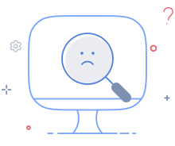

A strong content foundation reduces ambiguity, speeds decision-making, and prevents operational mistakes in high-risk endpoint environments.
Content principles
Prism content follows a foundational structure of clarity, consistency, inclusive language, scalable message design, localization readiness, and contextual tone.
1. Write for action clarity
Every line of UI content must help the user decide what to do next. Endpoint workflows must prioritize explicit verbs + clear object.
- Deploy patch to 24 devices
- Retry failed installation
- Restart required to complete update
- Isolate infected device
- Proceed
- Apply
- Done
- Continue action
2. Use system-first language
Write from the user's task context, not engineering internals. Never expose backend terminology unless it helps troubleshooting.
- Patch installation failed on 5 devices
- Device has not checked in for 3 hours
- This policy conflicts with an existing firewall rule
- Agent response timeout exception
- Sync thread failure
- Policy validation object mismatch
3. Design for risk awareness
Endpoint actions can affect thousands of devices. Content must clearly communicate scope, consequence, reversibility, required confirmation, and rollback path.
- Delete this policy permanently from 142 devices.
- Delete policy?
4. Keep language globally understandable
Endpoint Central serves global IT teams. Use plain English, avoid slang, idioms, and culturally specific humor. Prefer universal technical terms and expand abbreviations on first use.
- Restart required
- Bounce the machine
Voice and tone
Prism content must separate voice from tone. Voice is always consistent; tone changes by context.
Voice = always consistent
Prism voice for Endpoint Central should be:
Tone = changes by context
Tone adapts to workflow risk.
Neutral workflows
Use concise, task-first language.
- No devices found
- Deployment scheduled
- Scan completed
High-risk workflows
Use calm and explicit guidance.
- This action will restart selected devices.
- Devices may become temporarily unavailable.
Recovery workflows
Use reassuring and solution-led tone.
- Threat isolated successfully.
- You can safely resume network access.
AI workflows
Use confidence + explainability.
- Recommended based on recent patch failures.
- This action affects only unmanaged Windows devices.
Inclusive and accessible content
Prism must apply inclusive content principles rigorously. This is critical for trust in high-pressure IT workflows.
- Use people-first language
- Avoid blame
- Never shame users for failure
- Avoid gendered phrasing
- Support screen-reader-friendly labels
- Never use emoji for critical meaning
- Avoid inaccessible abbreviations
- We couldn't complete the deployment.
- You failed to deploy.
Writing patterns for Endpoint Central
Buttons and CTAs
Use verb + object.
- Deploy patch
- Retry sync
- View affected devices
- Export compliance report
- OK
- Confirm
- Next
Table labels
Use short, scannable labels. Avoid verbose headers that reduce scan speed.
Form helper text
Helper text must reduce decision friction.
- Choose devices that should restart automatically after installation.
- Restart settings configuration.
Empty states
Pair clear outcome + next action.
Try changing filters or run a fresh scan.
Designing messages
System feedback must be structured and predictable. Each message type follows a specific pattern:
AI content rules
AI-generated content in Endpoint Central must be explainable, scoped, confidence-aware, editable, and never falsely certain.
- Recommended because these devices missed the last two patch windows.
- This is the best fix.
Never allow AI content to sound absolute without evidence.
Audit and logs
Audit content must prioritize traceability. This ensures compliance readability.
- Always use past tense
- Include actor
- Include object
- Include timestamp-ready format
- Avoid conversational phrasing
- Admin deleted firewall policy.
- Policy gone.
Content anti-patterns
Avoid these enterprise UX failures:
- Vague CTAs
- Backend error jargon
- Blame-oriented errors
- Inconsistent threat wording
- Different patch terms across modules
- AI certainty without reasoning
- Humor in destructive dialogs
- Long unreadable warning banners
Empty state
Use empty states to guide, reassure, and motivate users when there is no data to display in Endpoint Central.
In Prism, empty states are action moments. They appear when a workflow is complete, when no data matches the current view, or when a user is starting a task for the first time.
A strong empty state reduces confusion, explains what happened, and clearly shows what users can do next.

No package data available yet
The container scan is still running or may have failed. Installed packages will appear here once the scan completes successfully.
Error messages
Use error messages to explain failures clearly, reduce recovery time, and help Endpoint Central users move forward confidently.
In Prism, error messages are recovery guidance. They appear after an action fails and must clearly explain what happened, what it affects, and what the user should do next.
A strong error message system reduces confusion, prevents repeated mistakes, and builds trust in high-risk endpoint workflows.
Principle
In Prism, content is operational guidance.
The right content system helps Endpoint Central users understand risk faster, act safely, and trust every workflow from patching to threat remediation.